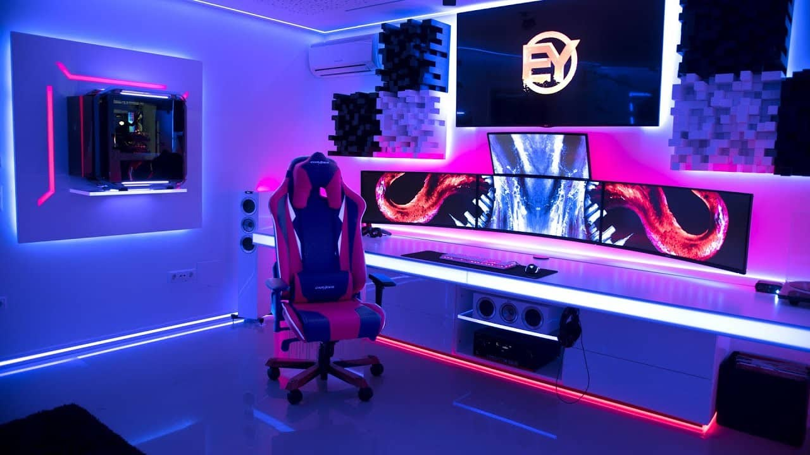
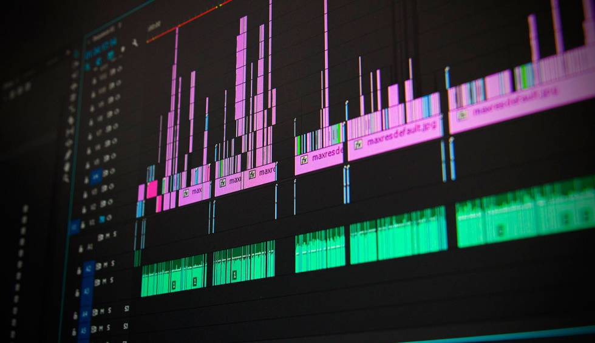
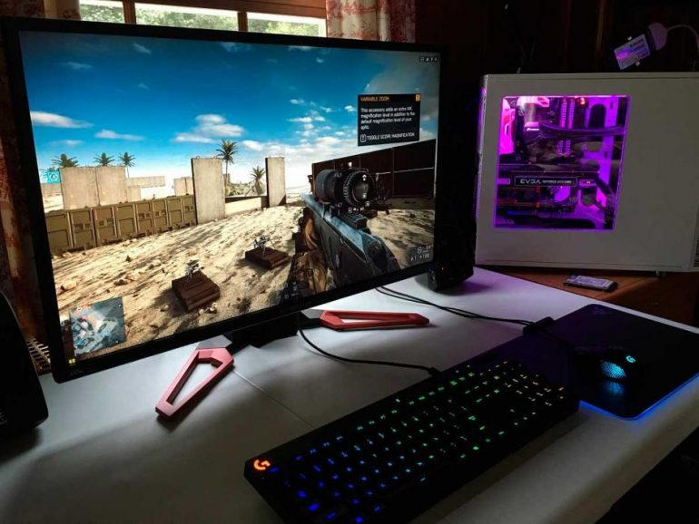

Setup
Ir formando un área de trabajo/estudio es algo que también considero un hobbie, puesto que buscar accesarios y herramientas para mejorar la calidad del trabajo así como la comodidad me suele entrenar, haciendo comparativas entre productos o encontrando nuevos que desconocí que existían.

Editar Videos
Recientemente comencé a editar videos y subirlos a mi canal de Youtube, me di cuenta que es algo que me divierte y disfruto mucho dado que son videos grabados con mis amigos. Espero pronto dedicarle más tiempo para ir mejorando e intentar nuevas técnicas de edición.

Jugar Videojuegos
Uno de mis pasatiempos que más tiempo le dedico es a jugar videojuegos con mis amigos, platicar de otros temas mientras pasamos el rato.